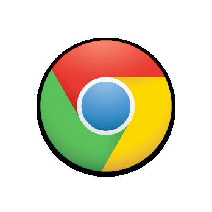
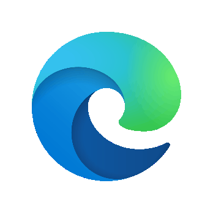

Chrome
Best default for the audio apps
Use Chrome first for 0PTICSCOPE, SPECTRAVAULT, and PIXEL VISUALIZER. It is the most reliable choice for microphone input, local files, screen or tab sharing, and recording.
★Launch something weird
Visualizers, music experiments, performance tools, and tiny games. Open a tool in your browser or download a copy to keep.

Best default for the audio apps
Use Chrome first for 0PTICSCOPE, SPECTRAVAULT, and PIXEL VISUALIZER. It is the most reliable choice for microphone input, local files, screen or tab sharing, and recording.

Strong fallback for Chromium-based tools
Use Edge if Chrome gives you trouble. It is also a good pick for DISTORTION, DJ Visual Studio, and PIXEL VISUALIZER, especially for screen capture, detachable windows, and file-based sessions.
Quick rule: Chrome or Edge for the full desktop experience. Safari on iPhone or iPad is fine for browsing and loading local files, but the heavier browser tools are still best on desktop Chrome or Edge.
Oscilloscope art lab
Best in Chrome • Edge also works
Audio-reactive engine
Best in Chrome • Edge also works
Retro desktop-audio spectrum visualizer
Desktop Chrome or Edge • share system audio
Live video remix
Audio loader now checks WAV / MP3 / AIFF compatibility instead of silently failing
Performance visuals
Great in Edge or Chrome
★ TOOL OF THE WEEK
Browser arpeggiator with scale-locked keys, chord modifiers, multi-octave patterns, MIDI/WAV capture, and the new note-reactive CRT + Sefirot visual.
Featured this week • latest v47 build • Chrome or Edge recommended
PICO-8 space repair game
PICO-8 action runner
Launch buttons open the live browser version. ZIP and cart links save a copy to your device when a download is available.
Browser version: Start with the Browser Guide above. Chrome is the recommended default for 0PTICSCOPE, SPECTRAVAULT, and PIXEL VISUALIZER. Edge is the best alternate pick and is also a strong choice for DISTORTION and DJ Visual Studio.
Files: Local upload buttons in 0PTICSCOPE, SPECTRAVAULT, DISTORTION and DJ VISUAL STUDIO open the device file picker directly. Audio pickers include WAV, MP3, M4A, AAC, AIFF, CAF, FLAC, OGG and OPUS extensions. DISTORTION now confirms whether the browser can actually decode the selected song instead of treating every selection as a successful load. If the browser blocks autoplay after choosing a song, tap Play once on the app audio control.
Share what you made